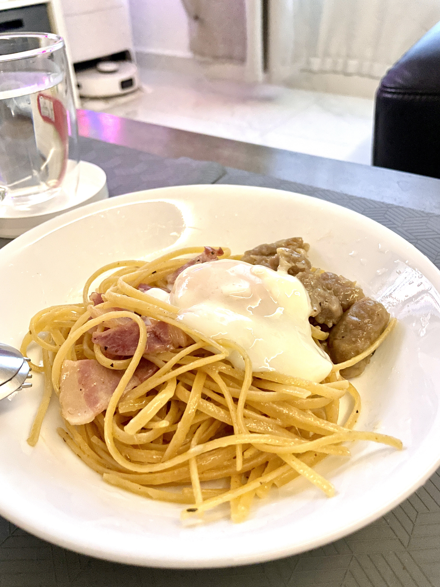

< Home Next >
Bumsy Recipes
Aglio Olio pasta
Published: 16th April 2024
Time required: 20 minutes (Parts in the Steps can be done concurrently)

“My wife & I concocted this recipe for a quick tasty & healthy workday lunch at home before having to return to our desks shortly.”
Ingredients
Serving: 2
- Pasta Linguini - ~140g (~weight of a cellphone)
- Extra virgin Olive oil - ~70ml (~35ml of Olive oil to every 70g of Pasta)
- Italian herbs - 2 dashes or more (1 dash per serving)
- Tomatoes - 1 piece (or 6 pieces of Cherry Tomatoes)
Optional:
- Shredded Mozerella Cheese - ~50g (depending on your cheese preference)
- Chicken Eggs - 2
- Meat - Minced Chicken/Bacon/Patty (Amount depends on personal preference)
Notes
Olive oil grade matters most.
Including meat lets us use its oil to enhance the pasta's flavor.
Steps
Pasta Linguini (Part 1/2):
- Put on a wok with ~1000ml of water & bring it to rolling boil
- Turn to medium heat on the wok & set the Pasta Linguini into it (fan the pasta out as much as possible) for 12 minutes
- Wash & slice the Tomatoe(s) & set it aside for the next Pasta Linguini part
Chicken Eggs (Part 1/2):
- Start a kettle with ~700ml of water
- Place the Chicken Eggs in a heat-resistant glass bowl & pour the heated kettle water into it gradually (to minimize eggs from cracking from the heat)
- Cover the glass bowl & leave it to set for 10 minutes (room temperature eggs) or 11 minutes (chilled eggs)
Pasta Linguini (Part 2/2):
- Pour the Pasta Linguini into a seeve & run it under tap water for ~10 seconds before setting it aside
- Empty the wok & add the sliced Tomatoes & Olive oil (~70ml) with dash(es) of Italian herbs
- Put the wok on medium heat & cook the Tomatoes till its juices begin oozing
- Add meat (if any) into the wok and cook until it is ready to serve
- Pour the Pasta Linguini back into the wok and stir it to get the Olive oil coat (add more Olive oil as needed)
- Add the Mozerella Cheese into the wok and stir the pasta with it for ~5 minutes (spread & melt the cheese across the pasta)
- Serve the pasta into the plate(s)
Chicken Eggs (Part 2/2):
- Retrieve the Chicken Eggs from the bowl & run it under tap water for ~10 seconds
- Create a recess on top of each pasta serving and crack a Chicken Egg in each
Ready to serve & enjoy!